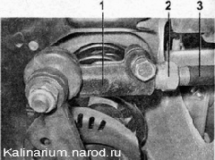
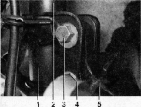
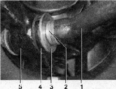

Передняя подвеска
Углы установки передних колес под нагрузкой 320 кг
Развал передних колес, град |
-0°30'..+0°30' |
Схождение передних колес, мм |
-1...+ 1 |
Продольный наклон оси поворота колеса, град |
1-2- |
|
Углы установки передних колес у снаряженного автомобиля |
|
Развал передних колес, град |
0 - 1- |
Схождение передних колес, мм |
0,5-2,5 |
Продольный наклон оси поворота колеса, град |
1-2- |
Моменты затяжки резьбовых соединений
Наименование узлов и деталей |
Резьба |
Момент затяжки. |
Н-М (кгс-м) |
||
Болты крепления колеса |
М12х1,25 |
65,2-92,6 (6,7-9,5) |
Гайка подшипника ступицы переднего колеса |
М20х1,5 |
225,6-247,2 (23-25,2) |
Болты крепления шаровой опоры к поворотному кулаку |
М10х1,25 |
49,0 -61,7 (5,0-6,3) |
Гайка крепления шарового пальца к рычагу |
M12x1,25 |
66,6-82,3 (6,8-8,4) |
Гайка регулировочного болта (с эксцентриком) стойки передней подвески |
M12x1,25 |
77,5-96,1 (7,9-9,8) |
Гайка болта крепления стойки передней подвески к поворотному кулаку |
М12х1,25 |
77,5-96,1 (7,9-9,8) |
Гайки крепления штока стойки передней подвески к верхней опоре |
М 14x1,5 |
65,9-81,2 (6,7-8,3) |
Гайки крепления верхней опоры стойки передней подвески к кузову |
М8 |
19,6-24,2 (2-2,5) |
Гайка болта крепления рычага передней подвески к кузову |
М12х1,25 |
77,5-96,1 (7,9-9,8) |
Гайки крепления растяжки передней подвески |
M16x1,25 |
160-176,4 (16,3-18) |
Болты крепления кронштейна растяжки |
М10х1,25 |
42,1-52,0 (4,3-5,3) |
Гайка болта крепления стойки стабилизатора поперечной устойчивости к рычагу передней подвески |
М10х1,25 |
42,1-52,0 (4,3-5,3) |
Гайки крепления штанги стабилизатора поперечной устойчивости к кузову |
М8 |
19,6-24,2 (2-2,5) |
Гайка болта нижнего крепления амортизатора к рычагу задней подвески |
М12х1,25 |
66,6-82,3 (6,8-8,4) |
Передняя подвеска независимая, с телескопическими поворотными стойками, поперечными рычагами, продольными растяжками рычагов и стабилизатором поперечной устойчивости торсионного типа.
Стойка подвески состоит из корпуса, в котором установлен гидравлический телескопический амортизатор винтовой пружины и верхней опоры. Снаружи к корпусу стойки приварены кронштейн для крепления поворотного кулака, поворотный рычаг и нижняя опорная чашка пружины.
В зависимости от комплектации автомобиля стойка может быть с бочкообразной или конической пружиной. Пружина своим нижним витком упирается в нижнюю опорную чашку, а верхним — в верхнюю опорную чашку, закрепленную на штоке амортизатора. Также на штоке амортизатора установлена верхняя опора стойки, состоящая из корпуса, резиновой подушки и подшипника. Корпус опоры крепится к кузову автомобиля тремя шпильками с гайками. Подшипник позволяет штоку амортизатора поворачиваться в опоре при повороте стойки, а резиновый буфер препятствует передаче вибраций на корпус автомобиля.
Шток амортизатора защищён от грязи и пыли пластмассовым кожухом. При пробое подвески ход штока ограничен буфером хода сжатия.
Поворотный рычаг стойки соединяется с рулевой тягой через шаровой палец. Изменение длины тяги при помощи ее соединительной муфты позволяет регулировать схождение передних колес.
Регулировочная втулка рулевой тяги:
1 — наконечник рулевой тяги; 2 регулировочная втулка; 3 — рулевая тяга
Поворотный кулак крепится к кронштейну стойки двумя болтами с гайками. Верхнее отверстие кронштейна выполнено овальным, а установленный в него болт имеет эксцентриковый поясок и эксцентриковую шайбу. При вращении этого болта поворотный кулак смещается относительно стойки, поворачиваясь на болте нижнего крепления, как на оси. Благодаря этому изменяется угол между стойкой и кулаком, что в свою очередь позволяет регулировать развал переднего колеса.
Снизу поворотный кулак соединен с поперечным рычагом подвески при помощи шаровой опоры. От перемещения поперечный рычаг удерживается растяжкой, которая своим задним концом крепится через резинометаллический шарнир к рычагу, а передним через подушку к кронштейну, закрепленному на кузове автомобиля. Изменяя количество шайб в переднем и заднем креплениях растяжки, можно изменять положение рычага, регулируя тем самым угол продольного наклона оси поворота колеса.
Концы стабилизатора поперечной устойчивости при помощи стоек соединены с поперечными рычагами передней подвески автомобиля. Центральная часть стабилизатора закреплена через резиновые подушки на кузове скобами. Движение одного из рычагов через стабилизатор передается на второй. Это позволяет частично синхронизировать работу обеих сторон подвески и тем самым уменьшить раскачивание автомобиля на неровной дороге и крены в поворотах.

Передняя подвеска: 1 — штанга стабилизатора; 2 — скоба крепления штанги стабилизатора; 3 — кронштейн поперечного рычага; 4 — поперечный рычаг; 5 — стойка стабилизатора; 6 — телескопическая стойка; 7 — шаровая опора; 8 — поворотный кулак; 9 — продольная растяжка; 10 — кронштейн растяжки
После ремонта любых элементов подвески или рулевого управления обязательно проверьте углы установки передних колес. Качественно провести проверку и регулировку углов установки передних колес можно только в условиях сервисного предприятия, имеющего специальный стенд для выполнения регулировочных работ.

Крепление поворотного кулака к стойке: 1 — кронштейн крепления поворотного кулака; 2 — корпус стойки; 3 — болт (эксцентриковый) верхнего крепления поворотного кулака; 4 — болт нижнего крепления поворотного к>'лака; 5 — поворотный кулак
В отверстие поворотного кулака запрессован и зафиксирован двумя стопорными кольцами двухрядный шариковый подшипник. Во внутреннее кольцо подшипника запрессована ступица колеса.

Крепление продольной растяжки к поперечному рычагу: 1 — задний конец продольной растяжки; 2 — регулировочные шайбы; 3 — упорная шайба; 4 — резинометаллический шарнир; 5 — поперечный рычаг подвески